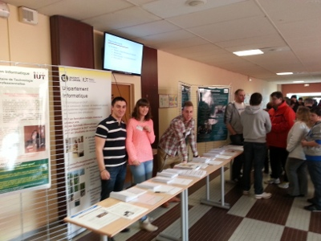
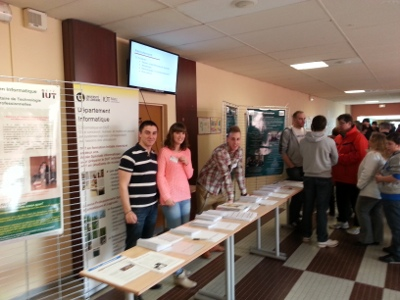
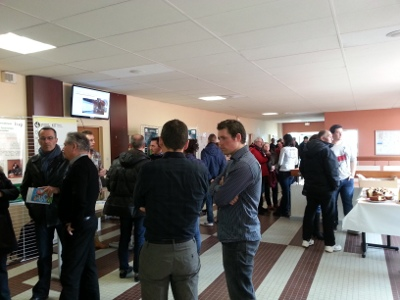

Evaluation des enseignements
Application de saisie de l'évaluation.
Emploi du temps DUT
Réglement intérieur
Voici les deux textes en vigueur :
- RI spécifique au Département approuvé par le Conseil du Département Informatique en novembre 2016 ;
- Règlement de l'IUT, applicable à tous les départements.
Retour sur les Journées Portes Ouvertes 2017
Les JPO se sont déroulées le 27 février 2017. Grosse affluence sur le stand du département ! Au menu : présence d'étudiants, d'enseignants, mais aussi d'anciens étudiants du département, prêts à répondre à toutes les questions. Visite des locaux, démonstration de projets, etc.
 


Merci à tous ceux - nombreux ! - qui se sont investis et ont fait de cette journée une réussite !
Pourquoi faire ses études à l'IUT ?
Programme du DUT
Voici le programme pédagogique national 2013.